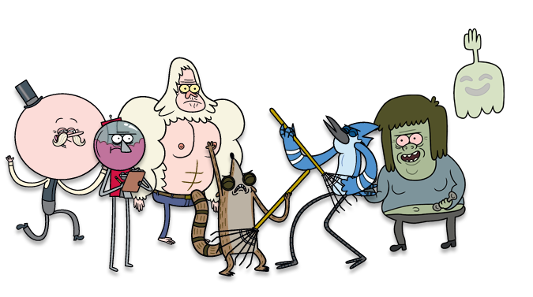

«Обычный мультик» (англ. Regular Show — «Обычное шоу») — американский мультсериал ориентированный на подростковую аудиторию производства телеканала Cartoon Network, созданный Джеймсом Куинтелом для канала Cartoon Network пилотный эпизод вышел в августе 2009 года оригинальная первая серия была показана в эфире Cartoon Network 6 сентября 2010 года в России мультсериал вышел на русский язык на 2 года позже 28 апреля 2012 года. Мультсериал получил премию «Эмми».
Сериал повествует о приключениях двух друзей: голубой сойки Мордекай и носухи Ригби. Они работают в городском парке вместе со снежным человеком по имени Скипс и вечно радостным Попсом под руководством их босса, аппарата по продаже жвачки — Бенсона. Также в парке работают их второстепенные друзья Масл Мен (Мускулист) и Дай Пять (Пятак). Мордекай и Ригби постоянно пытаются избежать работы и повеселиться, но им часто приходится расплачиваться за свою безответственность. Думая лишь о веселье, друзья всегда попадают в, казалось бы, безвыходные ситуации. Но в конце им все равно удаётся выбраться из неловкого положения благодаря помощи верных друзей.В мультсериале многократно используется обработанная музыка времён 80-х и ранее: «Mississippi Queen» группы Mountain, «Holding out for a Hero» Бонни Тайлер.
В этом мультсериале достаточно много персонажей, но я расскажу о пяти главных и это: